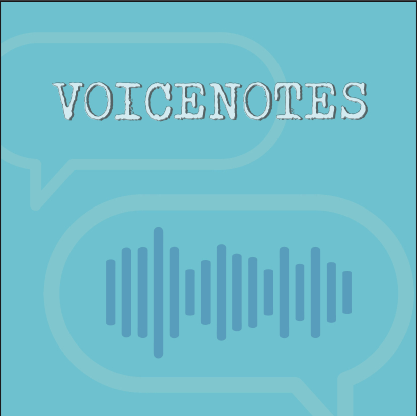
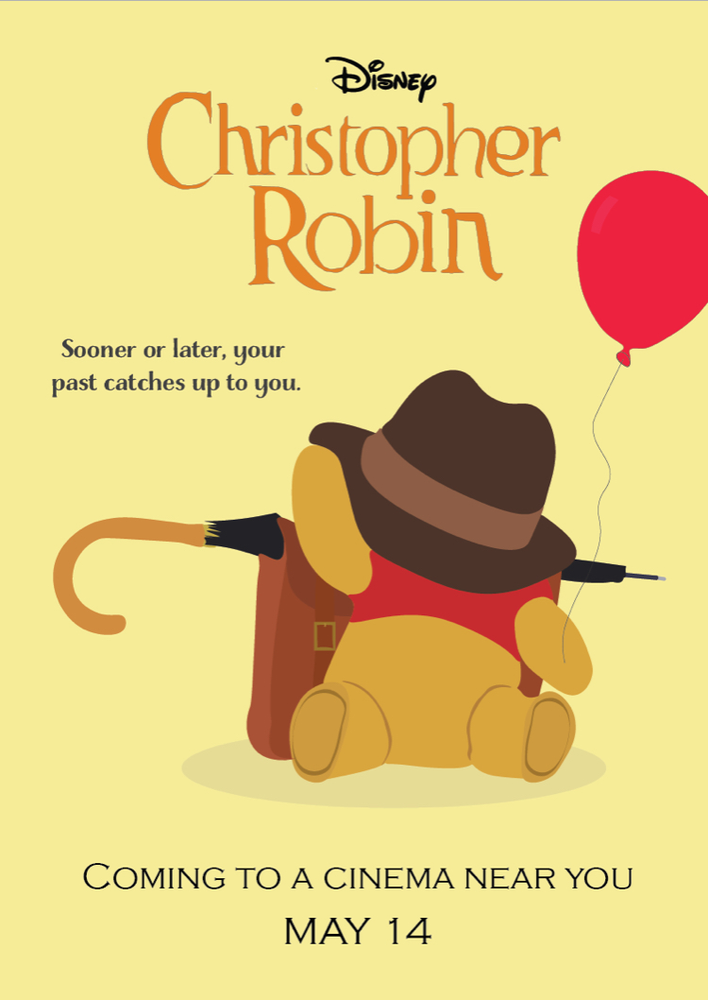

IXUX Student, UL
I enjoy creating an array of graphic designs, from illustrations, logos, brand identity packages to promotional leaflets. I use Adobe Illustrator for these designs.
During my first semester at the University of Limerick, I have learnt about photography and editing photographs. I use a DSLR and Photoshop to take and edit my photos.
I have also learnt about video recording and editing during my time on the course. I use a camera and props to shoot and After Effects and Premiere Pro to edit the video.
Interaction and Design Student, University of Limerick
I am a masters student from Clones in Co. Monaghan. After graduating from my bachelors degree in English and Human Development, I worked as a digital marketing assistant and studied multimedia production part-time where I was introduced to Interaction Design. During this time, I learnt about graphic design, photo editing, video production and web design.
This porfolio is a display of some of the work I have completed so far at the University of Limerick and also includes other graphic design work that I have done outside of college.
A sample of my work!
Photography
One of our first assignments was to take photos that all had a similar theme of 'LIfe'. I took these photos around Limerick using a DSLR camera, I adjusted the settings on the camera to to fit the lighting of where I was taking the photo and then edited the photos in Photoshop. I learnt how to take and photos during this assignment. I learnt a lot from editing the photos as I had never edited photos in Photoshop before, it was interesting to find out different tricks such as the Conent Aware feature and leveling photos.


Sound Editing
I created a sound story during the first semester using sound effects and clips in Audacity. I used the theme of Halloween for my story. I learnt how to use Audacity and different effects audio can have. I felt that this was a fun assignment and made me think more about audio and sound effects.
Video Making and Editing
For a video assignment, I worked in a group to create an advertisement for a portable speaker. This included shooting videos the and editing the clips together to create the final video. We used a camera, props and a greenscreen to help us get the video clips we needed and then edited the video in AfterEffects and PremierePro to get the final result. In this assignment, I definitley enjoyed working as part of a team and the whole process from coming up with ideas for the story board to editing the footage in After Effects, which I had never used.
3D Modelling and Animation
During a 3D Digital Modelling module, we created digital 3D models and animated them to create a video animation. I created a kitchen scene that shows a cup of tea being made. I used Maya to make the models and animate the scene and used PremerePro to edit the video. I found this module hard as I had never used Maya before this but after this module, I was happy with the outcome and all I had learned.
Graphic Design
I have created promotional leaflets. These leaflets are for a Hardware Shop andMonaghan.
Other Graphics!
Logos and illustrations.
 